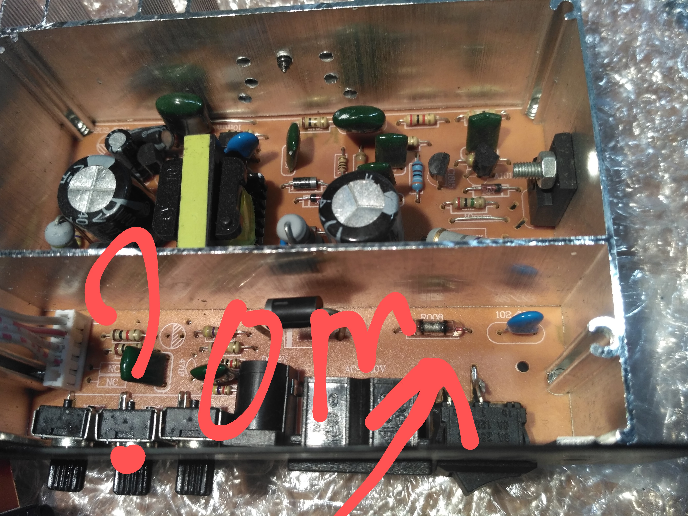

Основной текст.
В коде HTML разработчик может писать свои комментарии, которые никак не отображаются в браузере. Такие комментарии нужны для пояснения своего кода и для заметок себе и другим разработчикам. Комментарий начинается с . Всё что находится между этими тегами является комментарием и выводиться в браузере не будет.
В примере 1 показан типичный HTML-документ.
